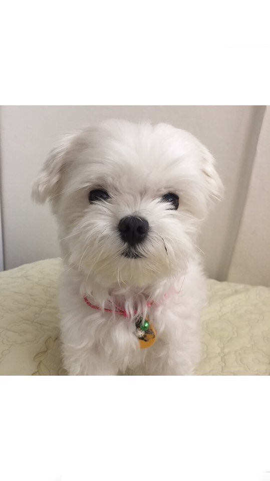
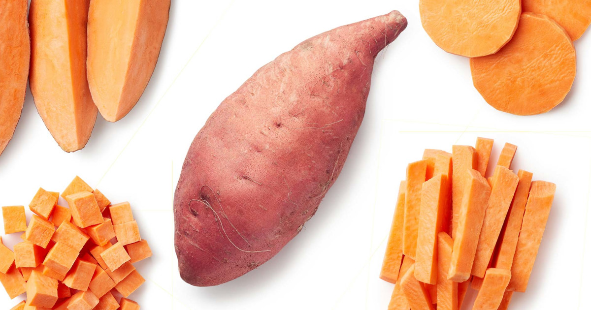

Mori

- maltese
- female
- birthday 2013.3.30
- 2.8kg
Mori's favorite
- sweetpotato
- meat
- puppy snack
sweetpotato
For the musical instrument sometimes called a “sweet potato”, see Ocarina.
For the genuine yam, see yam (vegetable). For the unsweet potato, see potato.
